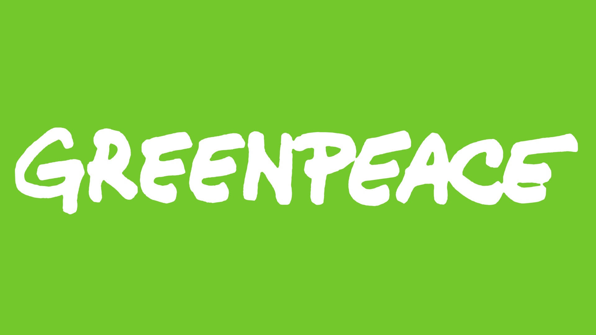

Instituição Greempeace
Ajude a preservar florestas e a recuperar áreas desmatadas.
Doe Agora
SOS Água Limpa
Contribua para a limpeza de rios e conservação de recursos hídricos.
Doe Agora
Refloresta Paraná
Ajude no plantio de árvores para restaurar a biodiversidade local.
Doe Agora